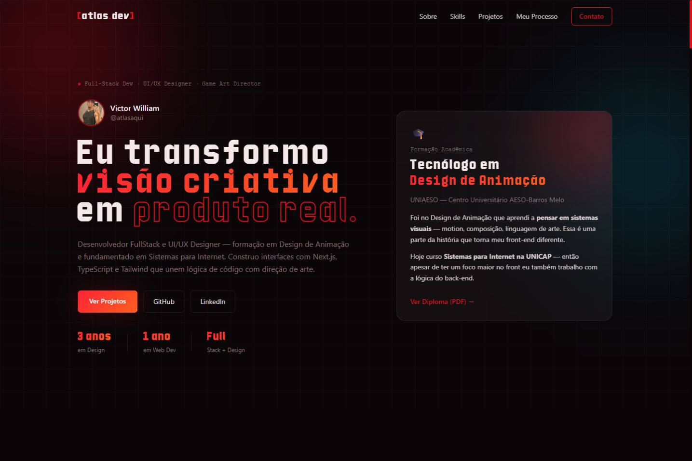
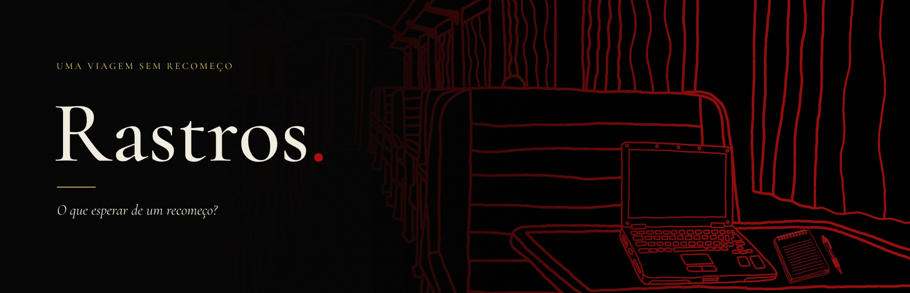
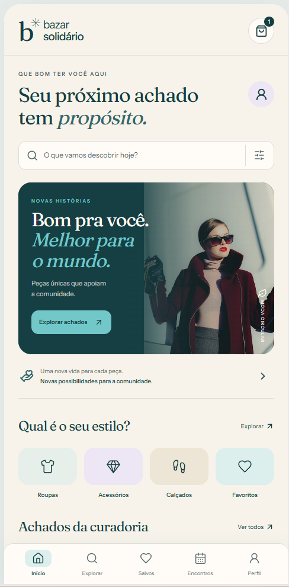

<!doctype html><html lang="pt-BR"><meta charset="utf-8"><title>Capas dos projetos</title><style>
*{box-sizing:border-box}body{margin:0;background:#111114;font-family:Arial,Helvetica,sans-serif;color:#f4f0e9}.cover{width:1200px;height:675px;position:relative;overflow:hidden;padding:60px;background:linear-gradient(145deg,#202028,#111114)}.tag{font-size:18px;letter-spacing:4px;color:#ff7a1a;text-transform:uppercase}.title{font-size:80px;font-weight:800;letter-spacing:-4px;line-height:1.05;margin:30px 0}.text{font-size:24px;line-height:1.5;color:#bdbdc8}.foot{position:absolute;bottom:38px;font-size:16px;letter-spacing:2px}.atlas .preview{position:absolute;width:800px;right:-140px;top:150px;border:1px solid #444;border-radius:16px;box-shadow:0 30px 90px #000;transform:rotate(-7deg)}.atlas .title{max-width:460px}.rastros{padding:0;background:#171315}.rastros img{width:1200px;height:675px;object-fit:contain}.rastros .foot{bottom:22px;left:30px;background:#111b;padding:12px;color:#fff}.bazar{background:#f7f3ea;color:#163f43}.bazar .tag{color:#35676a}.bazar .title{max-width:640px;font-family:Georgia,serif;font-size:77px;font-weight:400}.bazar .text{color:#536568;max-width:510px}.bazar .phone{position:absolute;right:95px;top:50px;width:277px;height:580px;overflow:hidden;border:8px solid #163f43;border-radius:37px;box-shadow:20px 30px 50px #163f4320}.phone img{width:100%;display:block}.bazar .orb{position:absolute;width:700px;height:700px;border-radius:50%;background:#72c7c944;right:-150px;top:210px}.jet{background:#101218}.jet>img{position:absolute;width:750px;height:675px;object-fit:cover;right:0;opacity:.65}.jet .shade{position:absolute;inset:0;background:linear-gradient(90deg,#101218 33%,transparent)}.jet .tag,.jet .title,.jet .text,.jet .foot{position:relative}.jet .title{font-size:94px;max-width:750px;font-style:italic;color:#d3ff5b}.jet .foot{position:absolute}.jet .text{color:#fff}.jet .tag{color:#d3ff5b}
</style><main id="cover"></main><script>
const name=new URLSearchParams(location.search).get('project')||'atlas';const templates={atlas:`<section class="cover atlas"><div class="tag">01 / Portfólio pessoal</div><h1 class="title">atlas.dev</h1><p class="text">Identidade visual.<br>Interface. Código.</p><div class="foot">NEXT.JS / TYPESCRIPT / MOTION</div></section>`,rastros:`<section class="cover rastros"><div class="foot">02 / JOGO PUBLICADO · PROGRAMAÇÃO & UX</div></section>`,bazar:`<section class="cover bazar"><div class="orb"></div><div class="tag">03 / Produto em desenvolvimento</div><h1 class="title">Bazar<br>Solidário.</h1><p class="text">Moda circular.<br>Uma experiência mobile<br>com propósito.</p><div class="phone"></div><div class="foot">REACT / TYPESCRIPT / UI MOBILE</div></section>`,jet:`<section class="cover jet"><svg style="position:absolute;right:-100px;top:20px;width:680px;height:680px" viewBox="0 0 700 700" aria-hidden="true"><g fill="none" stroke="#d3ff5b"><circle cx="350" cy="350" r="260" stroke-width="55" opacity=".1"/><circle cx="350" cy="350" r="220" stroke-width="3" opacity=".5"/><circle cx="350" cy="350" r="170" stroke-width="20" opacity=".2"/><circle cx="350" cy="350" r="90" stroke-width="2"/><path d="M260 430V290l180-75v175m-180-70 180-75" stroke-width="25"/><ellipse cx="220" cy="435" rx="45" ry="25" fill="#d3ff5b"/><ellipse cx="400" cy="397" rx="45" ry="25" fill="#d3ff5b"/></g><path d="M100 600 600 90M170 650 650 160" stroke="#d3ff5b" stroke-width="7" opacity=".15"/></svg><div class="shade"></div><div class="tag">04 / Estudo de front-end criativo</div><h1 class="title">JET SET<br>RADIO.</h1><p class="text">Reimagined / Motion & interação</p><div class="foot">REACT / GSAP / TAILWIND · CAPA EDITORIAL</div></section>`};document.getElementById('cover').innerHTML=templates[name]||templates.atlas;
</script></html>
